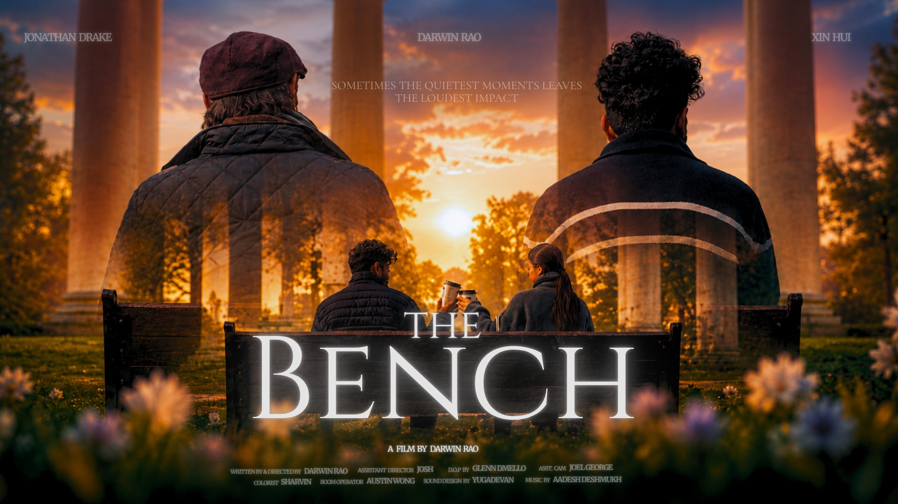

2026
Dealing with Death
Presented by USW BA Film
After inheriting his late father’s failing funeral business, awkward undertaker Graham stumbles into a deadly opportunity that begins to transform his fortunes. But as lies and murder pile up, Graham descends into a dark obsession with success, sacrificing his morality in the process.
Roles:
Director, Co-Screenwriter

2026
The Bench
Presented by Darwin Rao
from USW BA Performance and Media
A grieving elderly man and a heartbroken young stranger form a silent bond over several days, exchanging small acts of kindness that ultimately help the young man heal and carry that compassion forward after the old man is gone.
Roles:
2nd Assistant Director

2025
Promise, again
Presented by DPA, Sunway University
A divorced traditional-minded and middled-aged woman, the mother is trying to nurture well and take good care of her only rebellious 18 year-old daughter, in order to revive the broken family and heal her trauma of losing someone important in her life.
Roles:
Director, Screenwriter, Casting Director, Co-editor, Colourist

2024
The Candle
Presented by Austin Wong Channel
Hao, 25, lives in a small, cramped apartment and has been in a long-distance relationship with his girlfriend, Jessica, who’s in Toronto. For their anniversary, Jessica sent him a ring as a gift. Hao feels challenged to give her something back because of his living situation, but a sweet message from her motivates him to try his best to return the gesture.
Roles:
Director, Screenwriter, Editor, Actor

2023
Comfort in Discomfort
Presented by DPA, Sunway University
A 15-minute family documentary film unfolding the stories and accident happen in the family members, sharing memories of Jasmyn, DPA 2023 student with her family throughout her growing journey.
Roles:
Director, Camera Assistant

2023
the luck he left behind
Presented by DPA, Sunway University
A student documentary film discovering the impressions, memories, and impact of Kelvin Wong, the founder of Theatresauce, and the former Program Leader of Sunway University Diploma in Performing Arts.
Roles:
Assistant Director, Camera Assistant

2023
The Fabulous Secret of Arowana
Presented by Storideas Sdn. Bhd.
Yan Yin, a PhD student, as she pursues her late father’s unfinished dragonfish research at a farm, where she bonds with Ji Long, a man struggling with PTSD.
Roles:
Props Maker